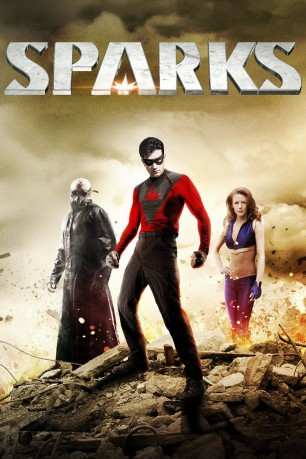

#3705 Sparks - Avengers from Hell
Alternativ: Sparks
 
 IMDB-Wertung: 6.0 / 10
IMDB-Wertung: 6.0 / 10  Metascore: 0
Metascore: 0 
Ian Sparks hat zwar keine Superkräfte, sieht sich nach dem Unfalltod seiner Eltern aber trotzdem dazu berufen, als maskierter Rächer für Recht und Ordnung auf den Straßen New Yorks zu sorgen, die im Jahr 1948 von zahlreichen Kriminellen heimgesucht werden. Für seinen anfangs erfolgreichen Kampf gegen die Gauner der Stadt verbündet er sich mit der schönen Lady Heavenly, in die er sich schon bald auch verliebt. Doch als er sich mit dem skrupellosen Serienmörder Matanza anlegt und alles verliert, lernt Ian schließlich auch die Schattenseiten des Heldendaseins kennen. Auf Rache schwörend, wird er wenig später Teil einer Gruppe von tatsächlichen Superhelden unter Führung des geheimnisvollen Archer.
Jahr: 2013
Dauer: 98 Minuten
FSK: 16
Land: USA Studio: RLJ EntertainmentTonspuren: DTS - ,
Untertitel:
Auflösung: 1080p (1920x1080) Größe: 6696 MB
Genre: Action, Thriller
Regisseur: Todd Burrows, Christopher Folino
Drehbuch: Jason Krawczyk
Soundtrack:
Darsteller:
 Chase Williamson als Ian Sparks
Chase Williamson als Ian Sparks Ashley Bell als Lady Heavenly
Ashley Bell als Lady Heavenly Clancy Brown als Archer
Clancy Brown als Archer Jake Busey als Sledge
Jake Busey als Sledge William Katt als Matanza
William Katt als Matanza Marina Squerciati als Dawn
Marina Squerciati als Dawn Clint Howard als Gordon Eldridge
Clint Howard als Gordon Eldridge- Scott Rinker als Mr. Docherty
 David Sobolov als Jason Driver
David Sobolov als Jason Driver Larry Cedar als Mr. Prather
Larry Cedar als Mr. Prather- Dave Hanson als Blasini
 Stephen Kearin als Concierge
Stephen Kearin als Concierge- Jeremy Rowley als Orson
- Austin Michael Coleman als Teenage Sparks
- Ben Messmer als Officer Mitchell
- Cathleen Kaelyn als Officer Humphries
 Lynne Marie Stewart als Sparks Grandmother
Lynne Marie Stewart als Sparks Grandmother- Kevin Sherwood als Rick Lane
- Meredith Zealy als Emma Sparks
- Ron Zimmerman als Landlord
- Corey Tocchini als Doctor Carlson
- Angelina Folino als Olivia Magusin / Felicity Driver
- Ryan Veronick als Young Boy
- Riley Rose Critchlow als Secretary Rose Guillen
- Art Kulik als Reporter B.P. Richards
- Stu Brumbaugh als Officer Bengt Jonsson
- Alberto De Diego als Dan O'Brien
- Daniel Ross als News Reporter
- Brady Romberg als Billy 'Two Face'
- Von Thomas als Dillan Smith Security Guard
 Esteban Cueto als Cain
Esteban Cueto als Cain- Chase Johnston als Young Sparks
- Chris Gross als Officer Lennington
- Matthew Oster als Sailor Boy
- Julius Weil als Governor Wolfe
- Jarred Sutton als Jarred Driver
- Merritt Hemenway als Reporter Magusin
- James Clouet als Reporter Ayotte
- Derek McCaw als Reporter Velasco
- Tyler Endicott als Officer Dartgnan
- Jeff Bordner als Police Radio Dispatch VO
- Dominic Folino als Young Cain
- Emerson Katt als Ring Master Jesus
- Greg Nolan als Ralph 'The Liar'
- Misty Orman als Kelly Sherwood - Dawn's Mother
- Maria Forlenza Oster als Nurse
- Jake Ray als Young Sledge
- Cristina Sutton als Hotel Maid Luisa Maria Velloso
- James Sutton als Officer
Datei: X:\Comic-Filme\Sparks - Avengers from Hell (2013, FSK16, 1920x1080).mkv seit 23.05.2016
Festplatte: Comicverfilmungen+MusikCD
 Es gibt insgesamt 44 Filme in der Gruppe 'Comic-Filme'
Es gibt insgesamt 44 Filme in der Gruppe 'Comic-Filme'